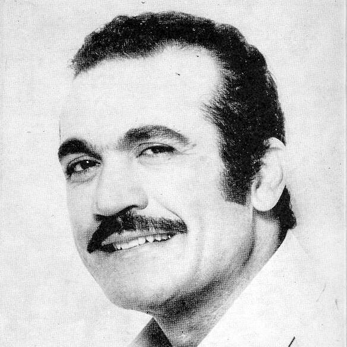
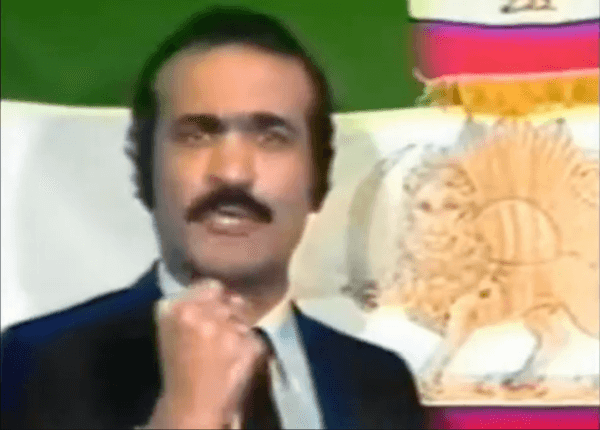

Biografie von Fereydoon Farrokhzad
Fereydoon Farrokhzad bleibt eine unersetzliche Ikone der iranischen Kultur. Seine Beiträge zur persischen Musik, Poesie, Fernsehen und Politik wirken bis heute nach. Tauchen wir tiefer in seine Geschichte ein.
Frühe Jahre
Fereydoon wurde am 7. Oktober 1938 in einer großen und angesehenen Familie in Teheran geboren. Er war das vierte von sieben Kindern von Oberst Mohammad Bagher Farrokhzad und seiner Frau Touran Vaziri-Tabar. Seine Geschwister waren Pooran, Amir Masoud, Forough, Gloria, Mehrdad und Mehran.
Feri, wie er zu Hause genannt wurde, war ein sensibles Kind, das eine tiefe Verbindung zu seiner Mutter hatte und von klein auf eine große Liebe zur Musik und Poesie zeigte.
Die Farrokhzad-Kinder wuchsen in einem Umfeld auf, das reich an künstlerischen Ausdrucksmöglichkeiten war, und wurden ermutigt, ihre kreativen Talente zu entdecken. Ihr Vater, ein eifriger Sammler von Büchern in verschiedenen Sprachen und selbst Dichter, kultivierte die Liebe zur Literatur, während ihre Mutter für ihre umfangreiche Puppensammlung bekannt war.
Fereydoon war schon in jungen Jahren ein begeisterter Leser, der oft in Bücher verschiedener Genres vertieft war. James Baldwin gehörte zu seinen Lieblingsautoren. Seine Leidenschaft für das Lesen bereicherte nicht nur seinen Geist, sondern beflügelte auch seine Vorstellungskraft und legte damit den Grundstein für sein späteres kreatives Wirken.
Außerdem hatte Fereydoon ein Talent zum Kochen, eine Fähigkeit, die er zusammen mit seiner Mutter in der Familienküche verfeinerte. Er experimentierte gerne mit verschiedenen Geschmacksrichtungen und Techniken und bereitete die Mahlzeiten für seine Familie und Freunde oft mit Liebe und Sorgfalt zu.
Fereydoon hatte auch eine besondere Vorliebe für Tiere, vor allem für Hunde. Er fand Trost in ihrer loyalen und bedingungslosen Zuneigung und verbrachte Stunden damit, mit seinen geliebten Gefährten zu spielen und sich mit ihnen zu verbinden. Sein Mitgefühl für Tiere spiegelte seinen sanften und fürsorglichen Geist wider und machte ihn bei Menschen und pelzigen Freunden gleichermaßen beliebt.
Die beiden älteren Schwestern von Fereydoon, Pooran und Forough, schrieben Prosa und Gedichte.
Forough, die zu einer der berühmtesten Dichterinnen des Iran werden sollte, hatte großen Einfluss auf ihren kleinen Bruder. Die Geschwister waren bis zu Foroughs tragischem Tod bei einem Autounfall eng miteinander verbunden. Selbst nachdem Fereydoon den Iran verlassen hatte, um im Ausland zu studieren, hielten sie einen zärtlichen Briefwechsel aufrecht, wobei Forough ihn trotz ihrer eigenen begrenzten Mittel finanziell unterstützte. Nach ihrem frühen Tod stiftete Fereydoon ihr zu Ehren einen Literaturpreis (Jayezeh-ye Forugh Farrokhzad).
Ein weiterer prägender Aspekt im Leben des jungen Fereydoon war sein Engagement in der linken Politik. Im Alter von 15 Jahren war er bereits Mitglied der Jugendorganisation der verbotenen Tudeh-Partei. Ohne Wissen seines Vaters, der Oberst bei den kaiserlichen Streitkräften Irans war, hatte er mehrere Kameraden der Tudeh-Jugendorganisation im Haus der Familie versteckt. Einige der Tudeh-Mitglieder, wie Mehdi Khanbaba Tehrani, wurden Farrokhzad's enge Freunde fürs Leben.
Studium in Deutschland (1958-1967)
Nach dem Abschluss des Dar ul-Funun-Gymnasiums in Teheran ging Fereydoon 1958 im Alter von 20 Jahren nach Deutschland, um zu studieren. Während der Woche besuchte er eine Sprachschule, während er an den Wochenenden auf einem Bauernhof im niedersächsischen Versmold arbeitete und regelmäßig zwischen München und dem Hof pendelte. Nach bestandener Deutschprüfung wurde er zum Studium der Sozialwissenschaften an der Ludwigs-Maximilians-Universität in München zugelassen.
1962 lernte Fereydoon die Schriftstellerin und Schauspielerin Anja Buczkowski kennen, die er noch im selben Jahr heiratete und mit der er 12 Jahre lang zusammen blieb. Anja, die Germanistik studierte und in einer Literatursendung des Bayerischen Rundfunks Gedichte vortrug, spielte eine entscheidende Rolle bei der Förderung von Fereydoons Interesse an der deutschen Sprache und Poesie. Ebenfalls 1962 wurden Fereydoons erste poetische Werke in deutschen Zeitungen und Gedichtbänden veröffentlicht. Im Jahr 1964 erschien sein Gedichtband "Andere Jahreszeit".
Briefe an Marek
1965 erhielt Fereydoon die Adresse von Anjas Cousin Marek, der in Polen wohnte, und die beiden wurden Brieffreunde. Im Laufe der Zeit entwickelte Fereydoon romantische Gefühle für diesen jungen Mann und drückte seine Gefühle in leidenschaftlichen Briefen aus. In denselben Briefen brachte er auch seine Liebe zu Polen zum Ausdruck und übte scharfe Kritik am Schah von Iran und an der westdeutschen Gesellschaft. Obwohl Fereydoon plante, Marek in Polen zu besuchen, trafen sie sich nie, und ihre Korrespondenz endete 1967 nach Foroughs Tod. Dennoch bewahrte Marek diese Briefe sein ganzes Leben lang auf, und sie wurden später von dem belgischen Künstler Stephane Rutten nach seinem Tod im Jahr 2017 entdeckt. Sie können den gesamten Text dieser Briefe hier lesen.
Fereydoon hatte nur 1972 die Gelegenheit, Polen zu besuchen, als er beim Festival in Sopot auftrat, aber es gibt keine Aufzeichnungen darüber, dass er Marek jemals persönlich getroffen hat.
Während seines Studiums an der LMU in München besuchte Fereydoon auch Vorlesungen an der Universität Wien und der Freien Universität Berlin. Er war fasziniert von der Geschichte des geteilten Landes und reiste oft zwischen Ost- und West-Berlin hin und her, um seine Beobachtungen zu vergleichen.
Bei einem seiner Besuche in Ost-Berlin begegnete er Johannes Bobrowski, einem antifaschistischen Dichter, dessen Ideen Farrokhzad sowohl künstlerisch als auch politisch tiefgreifend beeinflussten. Farrokhzad und Bobrowski pflegten ihre Freundschaft durch den Austausch von Briefen und Postkarten bis zu Bobrowskis plötzlichem Tod im Jahr 1965. Ihre Gespräche motivierten Fereydoon wahrscheinlich dazu, seine Magisterarbeit in Politikwissenschaft über das Verhältnis zwischen Staat und evangelischer Kirche in der DDR zu schreiben. Unmittelbar nach Abschluss seines Magisterstudiums begann er mit der Arbeit an einer Doktorarbeit, die den Titel "Marx, Engels, Lenin, Rosa Luxemburg und die polnische Frage" trug.
Rückkehr in den Iran
Nach dem Tod von Forough im Februar 1967 beschloss Fereydoon, zusammen mit Anja und ihrem einjährigen Sohn Rostam in den Iran zurückzukehren. Einige Jahre später zog Anja zurück nach Deutschland, nahm Rostam mit und ließ Fereydoon allein in seinem Haus im Teheraner Stadtteil Amir Abad zurück.
Zunächst versuchte Fereydoon, eine Karriere in der Politik oder im Bildungswesen zu machen. Angesichts der offenkundig linken Ausrichtung seines Diploms waren solche Bestrebungen im politischen Klima des Schahs im Iran jedoch unerreichbar. Es war seine Schwester Pooran, die ihm eine Chance beim zentralen iranischen Radiosender verschaffte, wo Fereydoon seine Karriere als Moderator begann. Sein angeborenes Charisma und seine Talente trieben seine Karriere voran und führten ihn schließlich zu einer bekannten Radiopersönlichkeit und einem Plattenkünstler. Es war jedoch seine Präsenz im zentralen Fernsehen, die ihn zu landesweiter Anerkennung katapultierte.
Fernsehkarriere
In den 70er Jahren waren Fereydoons Gesicht und Stimme im ganzen Iran bekannt. Er begeisterte das Publikum nicht nur als Sänger, sondern moderierte auch mehrere Fernsehsendungen und produzierte Dutzende davon.
Zu Farrokhzads bekanntesten Fernsehsendungen gehörte "Die Silberne Nelke" (Mikhakeh Noghrei), eine Sendung, in der Interviews mit zeitgenössischen Künstlern, Schriftstellern und Dichtern neben fesselnden Musik- und Tanzdarbietungen gezeigt wurden. In der Sendung stellte Farrokhzad eine Reihe iranischer Künstler vor und entdeckte sie, darunter Sattar, Shohreh, Shahram Solati, Ebi, Morteza, Rouhi Savoji, Hamid Shabkhiz, Leila Forouhar, Saeed Mohammadi und viele andere.
Farrokhzad verfolgte einen besonderen Ansatz bei der Einbindung des Publikums: Arme Menschen, insbesondere Kinder, wurden kostenlos zum Programm eingeladen und erhielten die besten Plätze. Pooran Farrokhzad erinnerte sich daran, dass ihr Bruder einmal alle Straßenkehrer Teherans versammelte, um eine seiner Shows zu besuchen.
1971 spielte Fereydoon die Hauptrolle in einem Film mit dem Titel "Ruhelose Herzen" (Delhaye Biaram). Leider kam der Film nicht gut an und verdankte seinen kurzen Erfolg allein der Popularität Farrokhzads. Die nächste Gelegenheit, sein schauspielerisches Können unter Beweis zu stellen, bot sich ihm erst 1991, als er in "I Love Vienna", einer österreichischen Komödie unter der Regie von Houchang Allahyari, mitspielte.
In einem Interview mit Percy Adlon erklärte Fereydoon, dass es für ihn nicht ausreicht, nur Geld zu verdienen, um glücklich zu sein. Nachdem er ein gewisses Maß an Anerkennung und finanzieller Stabilität erreicht hatte, widmete er sich der Philanthropie und machte häufig großzügige Spenden und Geschenke an marginalisierte Gemeinden, Kinderkrankenhäuser und gemeinnützige Organisationen.
Trotz Fereydoons bemerkenswertem Erfolg bereitete seine Präsenz im nationalen Fernsehen der Regierung immer wieder Kopfzerbrechen. Furchtlos sprach er politische Fragen an und griff manchmal provokante Themen auf. Er folgte auch seinem Herzen, wenn es um politisch motivierte Aktionen ging: so überbrachte er einmal der Mutter eines hingerichteten politischen Gefangenen namens Hamid Ashraf einen Blumenstrauß, eine Aktion, die ihn prompt seinen Job beim Fernsehen kostete. Er wurde mehrmals entlassen, einmal war er sogar zwei Jahre lang arbeitslos, aber er kam immer wieder zurück, weil die Menschen ihn liebten und die Schah-Regierung nichts dagegen tun konnte.
Persönliches Leben
1974 heiratete Farrokhzad im Iran seine zweite Frau, Tarane Sondoozi. Diese Ehe war mit Werbeaktionen und Fototerminen gespickt, hielt aber nur 2 Jahre lang.
Fereydoons sexuelle Orientierung war Gegenstand von Spekulationen und Debatten unter Fans und Wissenschaftlern. Er sprach zwar offen darüber, dass er sich zu Männern hingezogen fühlte und Beziehungen zu Männern hatte, doch hat er sich in öffentlichen Erklärungen oder Interviews nie ausdrücklich zu seiner sexuellen Orientierung geäußert.
Einige interpretieren seine Offenheit in Bezug auf seine gleichgeschlechtlichen Beziehungen als Indiz dafür, dass er homosexuell ist, während andere vermuten, dass er sich als bisexuell identifiziert hat oder schlichtweg jegliche Etikettierung vermieden hat. Letztlich bleibt ohne direkte Bestätigung durch Farrokhzad selbst unklar, wie er sich persönlich in Bezug auf seine sexuelle Orientierung identifiziert hat.
Bedeutsam ist jedoch, welche Auswirkungen seine Offenheit und Sichtbarkeit als queeres Individuum in einer Gesellschaft hatte, in der eine solche Sichtbarkeit selten und oft stigmatisiert war. Farrokhzads Bereitschaft, über seine gleichgeschlechtlichen Beziehungen und Erfahrungen zu sprechen, trug dazu bei, gesellschaftliche Tabus in Frage zu stellen, und förderte so eine größere Akzeptanz und ein besseres Verständnis für LGBTQ+-Personen in der iranischen Kultur.
Das Jahr der Revolution
1979 unterstützte Fereydoon begeistert die Revolution gegen den Schah und versuchte, sich der neu gegründeten linken Kulturorganisation, der Iranischen Kunstwerkstatt (Kargah-e Honar-e Iran), anzuschließen. Doch statt akzeptiert zu werden, wurde er von Mitgliedern der Organisation, die Gerüchte über seine sexuelle Orientierung gehört hatten, kurzerhand mit vorgehaltener Waffe vom Gelände eskortiert und als "vorrevolutionärer Dekadent" bezeichnet. Die Zurückweisung verletzte Fereydoon zutiefst, der mit den reinsten Absichten in die Organisation eingetreten war.
Bald darauf, als sich die Revolution in die Islamische Revolution verwandelte, beobachtete Farrokhzad schockiert, was mit seinem Heimatland geschah. Natürlich konnte er unter diesem Regime keine Fernsehpersönlichkeit mehr sein, und die Gefahr einer Verhaftung drohte ihm ständig. Irgendwann verbrachte er mehrere Tage im Gefängnis und ein Großteil seines Vermögens wurde beschlagnahmt. Nachdem er erneut vor Gericht geladen wurde, verließ Farrokhzad den Iran im Jahr 1982.

Leben im Exil (1982-1992)
Auf der Flucht aus dem Iran fand sich Fereydoon in der Türkei wieder, wo er 45 Tage lang in absoluter Armut und Obdachlosigkeit lebte. Glücklicherweise sprach ihn ein iranischer Landsmann auf der Straße an und bot ihm Unterkunft und Hilfe bei seinem Visum an. Fereydoon wanderte nach Paris aus, wo er Asyl beantragte.
Berichten zufolge war Fereydoon in Frankreich nicht glücklich. Das Trauma, ein Flüchtling zu sein, wirkte sich nachhaltig auf seine psychische Gesundheit aus. In späteren Interviews gestand er sogar, Selbstmordgedanken zu haben. Dennoch gab er weiterhin Konzerte in ganz Europa, bevor er nach Los Angeles zog, eine Stadt, die ihm die Aufnahme in eine lebendige iranische Szene versprach.
Fereydoon mochte die merkantile Atmosphäre von L.A. sofort nicht, arbeitete aber mehrere Jahre lang in der Stadt und moderierte Radio- und Fernsehsendungen für das lokale persische Publikum. Schließlich zog er nach Deutschland und ließ sich in der Stadt Bonn nieder.
Rettungsaktionen im Irak
Während der acht Jahre des iranisch-irakischen Krieges reiste Fereydoon mindestens dreimal in das iranische Kriegsgefangenenlager im Irak, rettete viele iranische Kinder aus der Gefangenschaft und brachte sie nach Europa, wo sie schließlich bei iranischen und europäischen Gastfamilien lebten, bevor sie wieder mit ihren Eltern zusammengeführt wurden.
Politischer Aktivismus und Identität
Nachdem er den Iran 1982 verlassen hatte, begann Fereydoon eine energische politische Kampagne gegen die Mullahs und persönlich gegen Khomeini. Er prangerte die Gehirnwäsche, die Menschenrechtsverletzungen und die völlige Dummheit des islamischen Regimes an. Seine witzigen und furchtlosen Angriffe auf seine Gegner blieben nicht unbemerkt. Viele Freunde warnten Farrokhzad vor den Gefahren einer solchen Haltung, aber er war entschlossen, sich frei gegen die Unterdrückung auszusprechen. Er spielte eine wichtige Rolle bei der Festigung der Anti-Mullah-Opposition im Iran und darüber hinaus.
Trotz seiner Opposition gegen das klerikale Regime ließ sich Farrokhzads politische Haltung nicht so einfach kategorisieren. Er vertrat eine nuancierte Perspektive auf die iranische Politik, stellte oft vereinfachende Darstellungen in Frage und verfolgte einen pragmatischen Ansatz zur Durchsetzung seiner Ideale. Diese Vielschichtigkeit hat zu unterschiedlichen Interpretationen seines Vermächtnisses geführt: Monarchisten, Liberale, Linke und Nationalisten erheben alle Anspruch auf sein Andenken, wenn auch aus unterschiedlichen Gründen.
Fereydoon gedachte in seinen Liedern verschiedener Opfer des Regimes, darunter der linke Dichter Saeed Sultanpoor, die junge kurdische Monarchistin Jolee Kalantari und sogar Mehdi Rahimi, der Leiter der Schah-Polizei in Teheran, die alle von Khomeini hingerichtet wurden.
Letztlich bleibt Farrokhzads politische Identität Gegenstand von Debatten und Interpretationen und spiegelt die dynamische und umstrittene Natur der iranischen Politik wider. Als lautstarker Kritiker des klerikalen Establishments und der autoritären Tendenzen des postrevolutionären Regimes wurde Farrokhzad allgemein mit liberalen und säkularen Oppositionsbewegungen in Verbindung gebracht. Sein Eintreten für Meinungsfreiheit, Menschenrechte und demokratische Reformen fand Unterstützung bei einem breiten Spektrum von Iranern, die von der repressiven Politik der islamischen Regierung desillusioniert waren.
Sein letztes dokumentiertes Konzert beendete Fereydoon mit dieser Aussage: "Es lebe der demokratische Iran! Tod den Faschisten und Islamisten!". Dies fasst seine Ansichten recht gut zusammen.
Tragisches Ende
Trotz seines Mutes und seiner Entschlossenheit, sich gegen die Unterdrücker in seinem Heimatland auszusprechen, hatte Fereydoons politischer Aktivismus schließlich tragische Folgen.
Am 8. August 1992 wurde er brutal ermordet in seiner Wohnung in Bonn, Deutschland, aufgefunden. Sein Tod schockierte die iranische Gemeinschaft und die Welt und ließ viele den Verlust eines furchtlosen Verfechters von Freiheit und Gerechtigkeit betrauern.
Die Umstände von Farrokhzads Ermordung sind nach wie vor rätselhaft, wobei Spekulationen auf mögliche politische Motive hindeuten. Viele glauben, dass er wegen seiner lautstarken Kritik am iranischen Regime zur Zielscheibe von Vergeltungsmaßnahmen wurde. Andere vermuten persönliche Rachegefühle oder Streitigkeiten als mögliche Faktoren.
Hier können Sie einen Dokumentarfilm über die Ermittlungen sehen.
Die Ermordung von Fereydoon war eine düstere Mahnung an die Gefahren, denen politische Dissidenten und offene Kritiker autoritärer Regime ausgesetzt sind. Sein früher Tod war nicht nur ein Verlust für seine Familie und Freunde, sondern auch für die breitere Gemeinschaft, die seinen Mut und seine Überzeugung bewunderte.
Nach seinem tragischen Ende bleibt Fereydoons Vermächtnis als leidenschaftlicher Verfechter der Meinungsfreiheit und der Menschenrechte bestehen. Sein Andenken inspiriert nach wie vor alle, die sich für eine gerechtere Welt einsetzen, und ist eine ergreifende Erinnerung an den fortwährenden Kampf für Freiheit und Demokratie.
Vermächtnis
Das Leben von Fereydoon Farrokhzad wurde durch eine Tragödie beendet, doch sein Vermächtnis als Künstler, politischer Aktivist und offener Queer ist für Menschen auf der ganzen Welt nach wie vor von großer Bedeutung.
Als Künstler hinterließ Fereydoon einen unauslöschlichen Eindruck in der persischen Musik und Poesie. Seine gefühlvolle Stimme brachte die Essenz von Liebe und Sehnsucht zum Ausdruck und verschaffte ihm eine treue Anhängerschaft, die Grenzen und Generationen überschritt. Er gab auch einigen Gedichten seiner Schwester eine Stimme und erweckte ihre Worte in einer faszinierenden Verschmelzung von Musik und Poesie zum Leben, die bis heute das Publikum in aller Welt verzaubert. Seine Beiträge zur persischen Kultur werden nach wie vor geschätzt und gefeiert und haben unzählige Musiker und Dichter dazu inspiriert, in seine Fußstapfen zu treten.
In der Politik setzte sich Fereydoon furchtlos gegen Ungerechtigkeit ein und nutzte seine Plattform, um sich gegen die repressive Politik des iranischen Regimes auszusprechen. Sein unerschütterliches Engagement für Meinungsfreiheit und Menschenrechte ist ein Hoffnungsschimmer für alle, die im Iran und darüber hinaus für Demokratie und Gleichberechtigung kämpfen.
Als einer der wenigen offen queeren Menschen des Landes durchbrach Fereydoon Barrieren und stellte gesellschaftliche Normen in Frage und ebnete so den Weg für eine größere Sichtbarkeit von LGBTQ+ Menschen in der iranischen Gesellschaft. Sein Mut zu einem authentischen und unvoreingenommenen Leben inspirierte andere dazu, ihr wahres Selbst anzunehmen, und förderte ein Gefühl der Solidarität und Zugehörigkeit innerhalb der queeren Gemeinschaft.
Fereydoons Geist lebt durch seine Kunst, seinen Aktivismus und die unzähligen Menschen, die er berührt hat, weiter. Sein Vermächtnis erinnert an die Kraft von Widerstandskraft, Kreativität und Mitgefühl und inspiriert künftige Generationen, den Kampf für Gerechtigkeit, Gleichheit und Menschenwürde fortzusetzen.